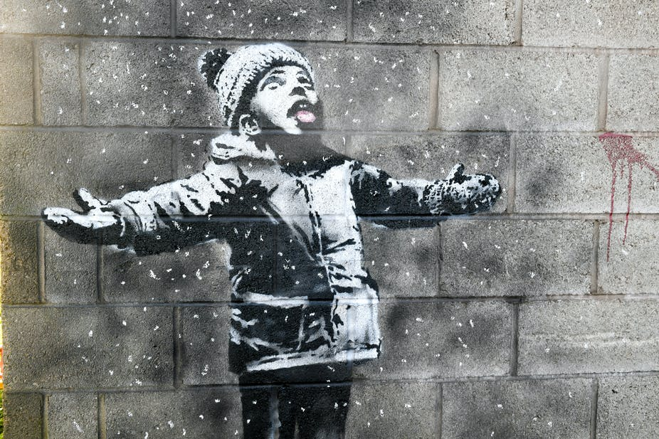
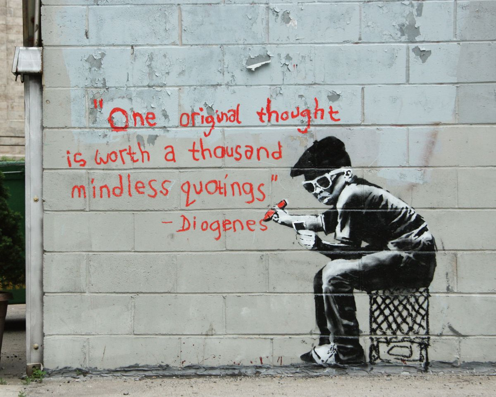

Perhaps the grandest theme conveyed through the work of Banksy is that of the "underclass" struggle and resiliance. Banksy chooses to highlight in simplistic measures the ordinary yet dismal obstacles that present themselves to everyone, partcularly the less fortunate. However, Banksy's work displays resiliancy in the face of such struggles. As a young, visibly indingant boy enjoys the falling snow, he demonstrates delight in the face of the world's bleak and obtuse adversity, highlighting the dominant message of Banksy's artwork.
One of the larger themes of Banksy's artowrk is nihilism, reflected best in the example below. Banksy emphasizes the often meaningless nature of reality, and by inclusion, his artwork itself. By including a quote about how meaningless quotes truly are, Banksy demonstrates a juxtapostional sense of nihilism. However, in a larger sense, the artwork itself IS original, which adds on yet another layer of contradiction and hypocracy.
